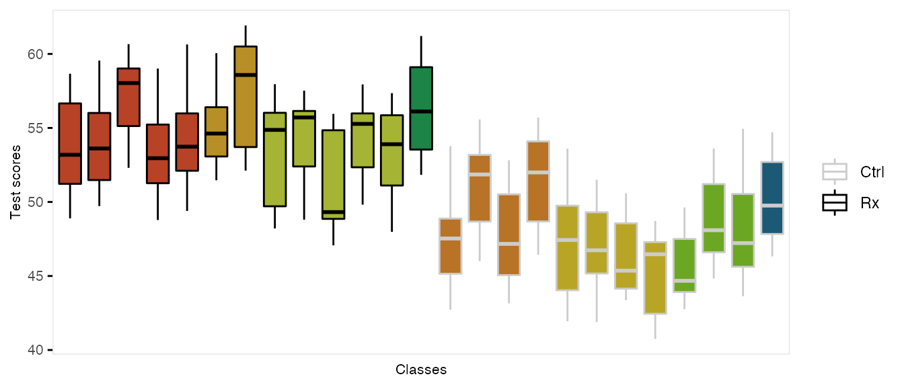

The function genCluster generates multilevel or clustered data based on a previously generated data set that is one “level” up from the clustered data. For example, if there is a data set that contains school level (considered here to be level 2), classrooms (level 1) can be generated. And then, students (now level 1) can be generated within classrooms (now level 2)
In the example here, we do in fact generate school, class, and student level data. There are eight schools, four of which are randomized to receive an intervention. The number of classes per school varies, as does the number of students per class. (It is straightforward to generate fully balanced data by using constant values.) The outcome of interest is a test score, which is influenced by gender and the intervention. In addition, test scores vary by schools, and by classrooms, so the simulation provides random effects at each of these levels.
We start by defining the school level data:
gen.school <- defData(varname = "s0", dist = "normal", formula = 0, variance = 3, id = "idSchool") gen.school <- defData(gen.school, varname = "nClasses", dist = "noZeroPoisson", formula = 3) dtSchool <- genData(8, gen.school) dtSchool <- trtAssign(dtSchool, n = 2) dtSchool
## idSchool s0 nClasses trtGrp
## 1: 1 0.6898157 4 0
## 2: 2 -1.5647994 2 0
## 3: 3 -1.0299606 1 1
## 4: 4 -0.8310315 6 0
## 5: 5 0.8465787 3 1
## 6: 6 0.7018579 1 0
## 7: 7 -1.2211891 6 1
## 8: 8 2.2425512 3 1The classroom level data are generated with a call to genCluster, and then school level data is added by a call to addColumns:
gen.class <- defDataAdd(varname = "c0", dist = "normal", formula = 0, variance = 2) gen.class <- defDataAdd(gen.class, varname = "nStudents", dist = "noZeroPoisson", formula = 20) dtClass <- genCluster(dtSchool, "idSchool", numIndsVar = "nClasses", level1ID = "idClass") dtClass <- addColumns(gen.class, dtClass) head(dtClass, 10)
## idSchool s0 nClasses trtGrp idClass c0 nStudents
## 1: 1 0.6898157 4 0 1 0.6704555 14
## 2: 1 0.6898157 4 0 2 -2.8224104 31
## 3: 1 0.6898157 4 0 3 -2.0754965 14
## 4: 1 0.6898157 4 0 4 0.4692055 24
## 5: 2 -1.5647994 2 0 5 -4.3093833 12
## 6: 2 -1.5647994 2 0 6 2.1724020 19
## 7: 3 -1.0299606 1 1 7 0.8861061 20
## 8: 4 -0.8310315 6 0 8 -3.4272460 28
## 9: 4 -0.8310315 6 0 9 1.3299529 19
## 10: 4 -0.8310315 6 0 10 -1.1168601 22Finally, the student level data are added using the same process:
gen.student <- defDataAdd(varname = "Male", dist = "binary", formula = 0.5) gen.student <- defDataAdd(gen.student, varname = "age", dist = "uniform", formula = "9.5; 10.5") gen.student <- defDataAdd(gen.student, varname = "test", dist = "normal", formula = "50 - 5*Male + s0 + c0 + 8 * trtGrp", variance = 2) dtStudent <- genCluster(dtClass, cLevelVar = "idClass", numIndsVar = "nStudents", level1ID = "idChild") dtStudent <- addColumns(gen.student, dtStudent)
This is what the clustered data look like. Each classroom is represented by a box, and each school is represented by a color. The intervention group is highlighted by dark outlines:
